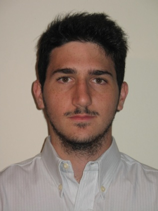
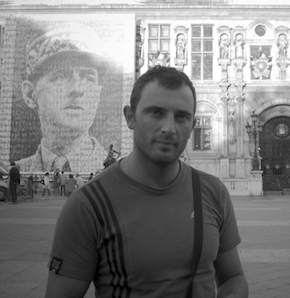

Visiting
Research internships
We strongly believe in collaboration with other research groups. Researchers and students from other universities and companies regularly spend research periods with us, working on joint topics in network measurement, traffic analysis and security.
If you are interested in visiting us, write to Antonio Pescapè.
Past internships
-

May 2019
Julian M. Del Fiore
University of Strasbourg
-
September 2018
Dmitrii Chemodanov
University of Missouri-Columbia
-
April 2018
Ghizlane Hazam
FSTM — Hassan II University
-
November 2014
Hossein Doroud
University Carlos III de Madrid
-
September 2014
Peter Megyesi
Budapest University of Technology and Economics
-
November 2011
Monika Grajzer
Telcordia Poland
-
October 2010 – June 2011
Xu Tian
Beijing University of Posts and Telecommunications
-
June 2009
Valentin Carela
Technical University of Catalonia
-

April 2008
Manuel Crotti
University of Brescia
-
July 2007
Christian Callegari
University of Pisa
-
July 2007
Vinh Bui
University of New South Wales